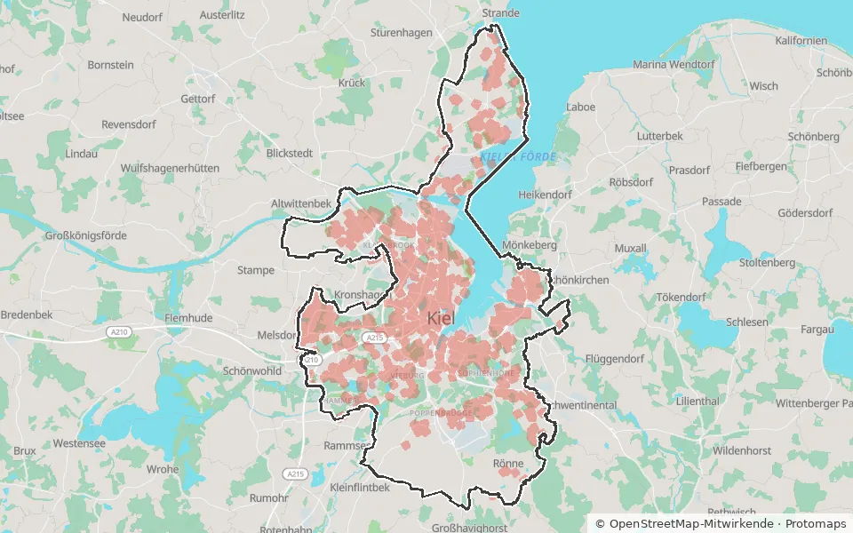
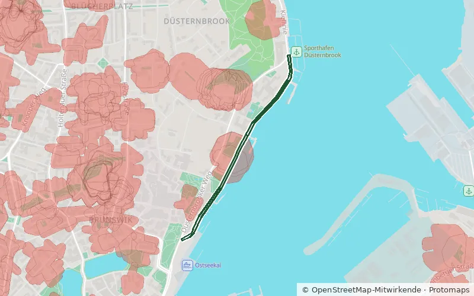
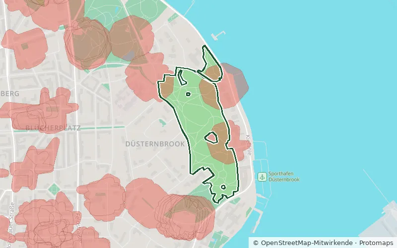
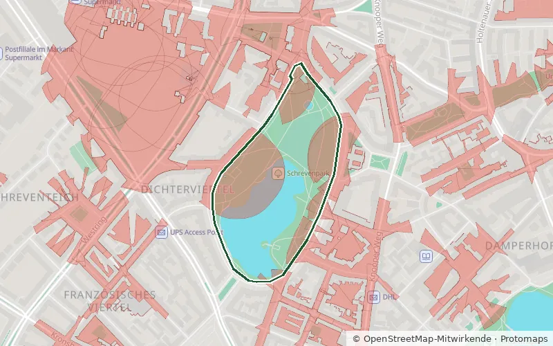
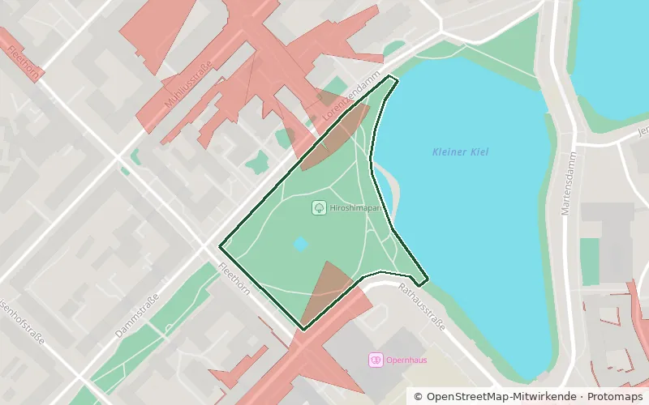
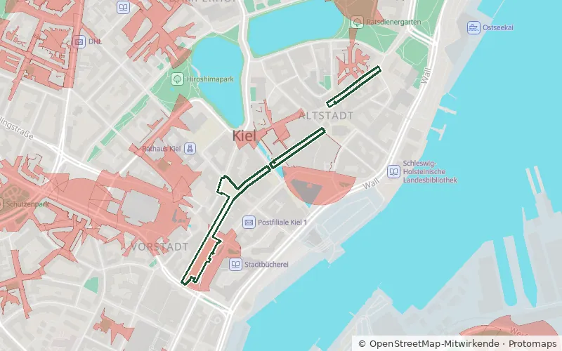
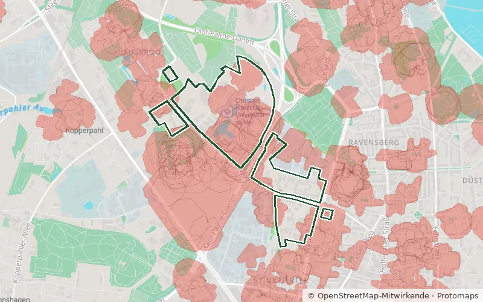

In Kiel ist öffentliches Kiffen auf 20 km² verboten, das sind 16,6 % der Stadtfläche von 119 km². Grund sind 1 090 Einrichtungen wie Schulen und Spielplätze: In ihrer Sichtweite, bis 100 Meter vom Eingang und ohne Gebäude dazwischen, verbietet § 5 KCanG den Konsum. Dazu kommt die Fußgängerzone in der Holstenstraße von 7 bis 20 Uhr und überall die Gegenwart von Minderjährigen.
Wald gibt es wenig (10 % der Stadtfläche), und er liegt nicht abseits: 13,5 % davon liegen in einer Zone, fast so viel wie im Rest der Stadt (17,0 %).

Woher die Zonen in Kiel kommen
| Einrichtung | Anzahl | Zonenfläche |
|---|---|---|
| Schulen | 77 | 5,0 km² |
| Kitas und Kindergärten | 99 | 2,5 km² |
| Kindertagespflege | 9 | 0,2 km² |
| Spielplätze | 341 | 6,5 km² |
| Kinder- und Jugendeinrichtungen | 29 | 0,6 km² |
| Sportstätten | 535 | 10,6 km² |
Jede Art für sich gezählt, Überlappungen also mehrfach. Anbauvereinigungen nur, soweit in OpenStreetMap eingetragen.
Die meisten Zonen gehen auf die 535 Sportstätten zurück, danach auf die 341 Spielplätze. Auf Spielplätzen verbietet das Nichtraucherschutzgesetz des Landes außerdem das Rauchen von Tabak, also auch von Joints mit Tabak (Nichtraucherschutzgesetz).
Kiellinie, Schrevenpark und Düsternbrook
An der Kiellinie an der Förde liegen 20 % in einer Zone, im Düsternbrooker Gehölz dahinter 20 %, im Alten Botanischen Garten 14 %.


Im Schrevenpark sind es 48 %: Im Park liegt ein Spielplatz, am Rand liegen fünf Kitas und fünf Sportanlagen. Der Hiroshimapark am Rathaus liegt zu 13 % in einer Zone. Auf einem 100 Meter breiten Streifen Land entlang der Schwentine sind es 57 %.


Innenstadt
Eine amtliche Liste der Fußgängerzonen gibt es nicht. Belegt ist die Holstenstraße „vom Alten Markt bis zur Schevenbrücke/Beginn Holstenplatz“ (Land Schleswig-Holstein, November 2025). Dort gilt von 7 bis 20 Uhr Konsumverbot; blau sind die Fußgängerbereiche aus OpenStreetMap.
Von Holsten- und Dänischer Straße liegen außerdem 39 % in einer Sichtweiten-Zone. Der Asmus-Bremer-Platz liegt außerhalb (0 %), der Vinetaplatz in Gaarden fast ganz in einer Zone (96 %). Auf dem Holstenplatz steht von Mai bis September eine betreute Sandkiste; in ihrem Umfeld gilt nach Angabe der Stadt ein „generelles Rauchverbot“ (Stadt Kiel).

Universität, Stadion und Kieler Woche
Hochschulen sind nach § 5 KCanG keine Verbotsorte. Vom Campus der Universität liegen 37 % in einer Zone, um 19 Sportanlagen, zwei Kitas und zwei Spielplätze auf dem Gelände.

Im Holstein-Stadion verbietet die Stadionordnung, Cannabis mitzuführen (Stadionordnung). Für die Kieler Woche haben wir keine eigene Regel der Stadt zu Cannabis gefunden; dort sind aber viele Kinder, und in ihrer Gegenwart gilt das Verbot ohnehin.
Was sonst noch in Kiel gilt
In Schleswig-Holstein ist die Stadt für Verstöße gegen die Konsumverbote zuständig (Zuständigkeitsverordnung). Die Beträge im Bußgeldkatalog des Landes haben wir nicht nachlesen können; das Gesetz erlaubt bis zu 30.000 Euro. Seit Oktober 2026 ist gerauchtes Cannabis im Land außerdem in Gebäuden wie Gaststätten, Behörden und Hochschulen verboten (Gesetzesänderung). Eigene Verbotszonen für Cannabis hat Kiel nicht (Stand 27. November 2026).
Häufige Fragen zu Kiel
Wo darf man in Kiel kiffen?
Nach § 5 KCanG außerhalb der roten Flächen, etwa an großen Teilen der Kiellinie (20 % in einer Zone). Tagsüber nicht in der Holstenstraße, nie in Gegenwart von Minderjährigen und nicht in Gaststätten. Weiß heißt nicht sicher erlaubt: Hecken, Bäume und fehlende Einrichtungen kennt die Karte nicht.
Wie genau ist das?
Täglich aus OpenStreetMap gerechnet, mit Gebäuden als Sichthindernis; die Zahlen hier sind vom 27. November 2026. Eine Orientierungshilfe, keine Rechtsauskunft (wie gerechnet wird).
Fehlt eine Einrichtung? Korrekturen in OpenStreetMap stehen am Tag darauf auf der Karte; bitte nur eintragen, was es vor Ort gibt.